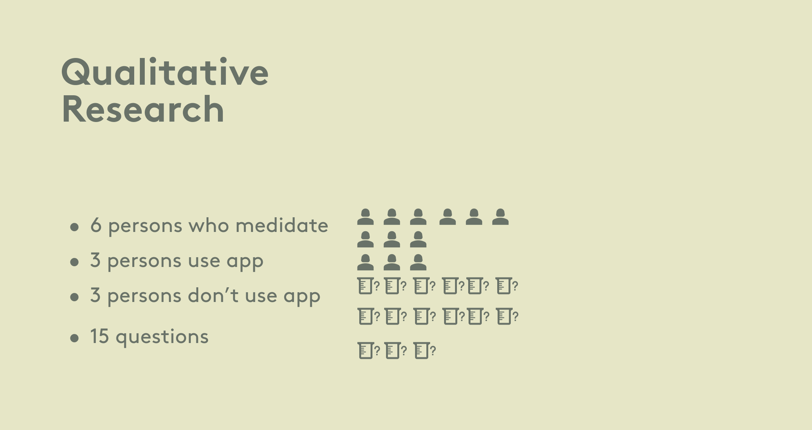
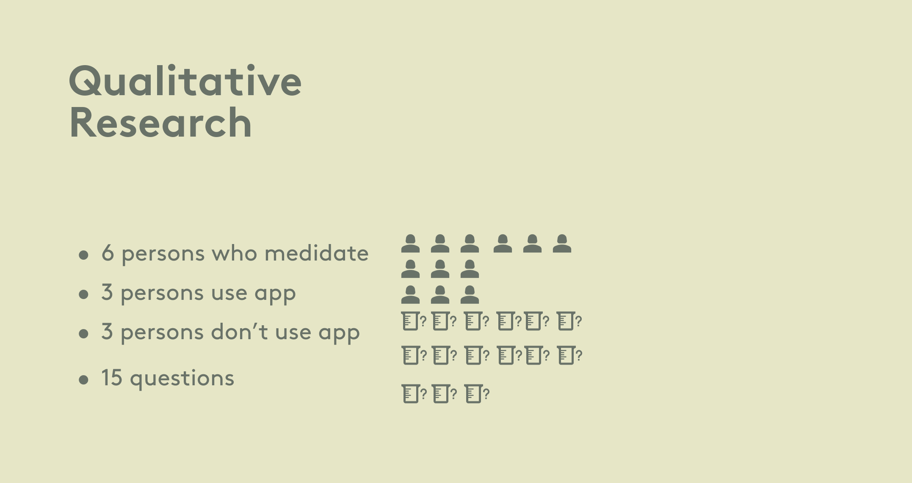

Mind Space
Como estudiantes en el bootcamp de diseño UX/UI en Ironhack, tuvimos el desafío de crear una aplicación de bienestar.
Observamos la creciente tendencia de la popularidad de la meditación e identificamos una demanda de aplicaciones accesibles y fáciles de usar para apoyar a las personas interesadas en prácticas de meditación.
| Equipo: | Felix, Vladan y yo — "el talentoso trío de diseñadores detrás de la creación de la aplicación de meditación Mindspace" |
| Roles: | Diseño UX, Diseño UI, Creación de identidad de marca |

Realizamos una investigación exhaustiva de los usuarios, incluyendo entrevistas cuantitativas y cualitativas, para recopilar perspectivas y comentarios. Analizamos estos datos a través de diagramas de afinidad y mapas de empatía para identificar patrones y necesidades de los usuarios.
Además, realizamos un análisis competitivo para entender el panorama del mercado, oportunidades de diferenciación, y utilizamos estos conocimientos para crear personas y un mapa del viaje del usuario, que informaron nuestro diseño de la aplicación.
 

En la fase de Empatizar, nuestro objetivo principal es cultivar una comprensión profunda de nuestros usuarios y sus experiencias. Para lograrlo, realizamos entrevistas y encuestas, métodos ampliamente reconocidos como efectivos para recopilar valiosos comentarios de los usuarios.
Estas actividades nos permiten sumergirnos en los puntos de vista de los usuarios, comprender sus desafíos e identificar puntos de dolor. En última instancia, esto nos lleva a crear herramientas esenciales como el Mapa de Empatía y el Mapa del Viaje del Usuario, que sirven como recursos valiosos mientras avanzamos hacia la fase de Definir.
Durante la fase de definición, podemos desarrollar personas de usuario, construir un mapa del viaje del usuario y, en última instancia, articular la declaración del problema.

Durante la fase de ideación, generamos un flujo de usuario, construimos un mapa de afinidad, aplicamos el método MOSCOW, desarrollamos un Producto Mínimo Viable (MVP) y realizamos lluvias de ideas usando la estrategia Crazy Eights.


En la fase de prototipado y pruebas, producimos un prototipo de baja fidelidad, realizamos pruebas de usuario, diseñamos wireframes y documentamos los comentarios de los usuarios.
Prototipo de Alta Fidelidad
Aplicación de Meditación Mind Space